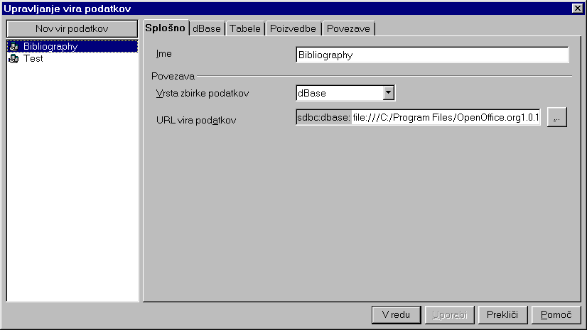
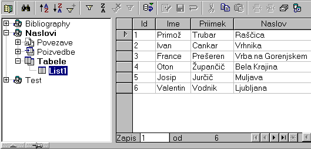
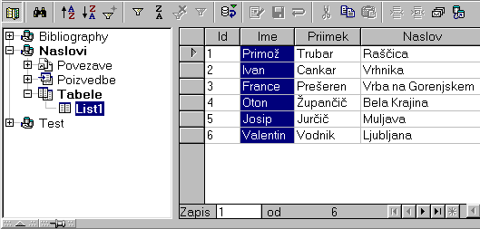
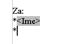
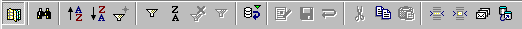
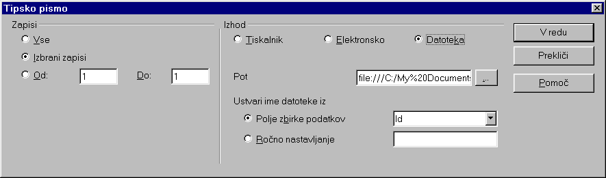
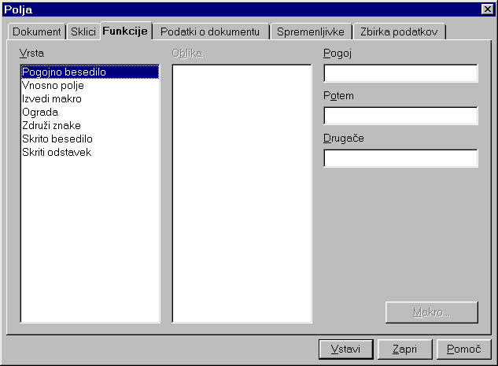

Kako spojiti dokument ("Mail Merge") s Calc-ovo preglednico.pripravilOpenOffice.org Documentation ProjectNamen spajanja dokumenta z besedilom s podatkovnim virom je ta, da nam paket OpenOffice.org sam ustvari izhodne datoteke, ki se ravnajo po predlogi dokumenta, vsebujejo pa podatke iz izbranih zapisov podatkovnega vira. Vsebina1. Ustvarjanje vira podatkovZa spajanje dokumentov v OpenOffice.org je treba najprej iz Calc-ove preglednice ustvariti vir podatkov, ki ga lahko nato prika�emo v pregledovalniku virov podatkov. V Calc-u napolnimo preglednico z ustreznimi podatki (npr. naslovi prejemnikov pisma), pri �emer naj bodo v prvi vrstici imena stolpcev. Preglednico shranimo (Datoteka – Shrani) v privzetem .sxc formatu, v poljubni mapi. Nato lahko preglednico zapremo. V meniju Orodja izberemo Viri podatkov...  V raziskovalcu na levi so prikazani viri podatkov, ki so �e bili ustvarjeni in registrirani z Upravljalnikom virov podatkov. �e ustvarjene in registrirane vire izberemo z brskanjem po pregledovalniku. Nov vir pa ustvraimo takole:
Nasvet: Enak postopek uporabimo tudi za ustvarjanje virov podatkov, ki so �e prisotni na vašem sistemu in jih OpenOffice.org podpira. 2. Ustvarjanje pisemske predloge



Ko smo vstavili vsa �elena polja, je dokument pripravljen za spajanje. 3. Spajanje
�e �elimo izbrati vse zapise
v tabeli, kliknemo na pravokotnik v zgornjem levem kotu tabele.
Zdaj je vse pripravljeno za spajanje. V orodni vrstici so na predzadnji ikoni narisana tri pisma:  Ko kliknemo nanjo, se odpre pogovorno okno: 
S tem je postopek kon�an. 4. Triki v zvezi z oblikovanjem predlogeGlede na to, da so zapisi med seboj razli�ni, je te�ko vnaprej predvideti, kakšna naj bo pisemska predloga, da bo izgled rezultatov dober. To predvsem velja za prelom vrstic, pravilno uporabo presledkov in izogibanje neporebnim praznim vrsticam, ko nekateri naslovi vsebujejo ve�je število vrstic kot drugi. Odgovori na ta vprašanja so podani v tem poglavju. Kako oblikovati predlogo? Kako bodo zapisi vnešeni v dokument, lahko preverimo �e pred spajanjem. Ustrezni ukaz izberemo iz orodne vrstice:
Tretja ikona z desne se imenuje ‘Podatki v polja’. Izberemo zapis in kliknemo ikono, nakar se v polja v dokumentu vpišejo podatki iz izbranega zapisa. Postopek lahko ponavljamo, dokler se ne prepri�amo, da bodo vsi naslovi izpisani v skladu z našimi �eljami. Kako odstraniti prazne vrstice? Pogosto se zgodi, da vsi naslovi nimajo enakega števila vrstic. Tako so pri nekaterih zapisih dlo�ena polja prazna. Denimo, da imamo v naših tabeli in predlogi polje ‘Naslov_2’, ki pa je pri nekaterih zapisih prazno. V predlogi postavimo kurzor pred polje ‘Naslov_2’. Isto�asno pritisnemo tipki CTRL in F2, nakar se odpre naslednje pogovrono okno. Kliknemo jezi�ek ‘Funkcije’ .  Izberemo vrsto polja 'Skriti odstavek' in kot Pogoj vstavimo ‘not(ime_polja)'. V našem primeru se pogoj glasi not(Naslov_2). Nato kliknemo gumb 'Vstavi', s �imer ta pogoj vnesemo v dokument. 5. ZaslugeAvtor : Sophie Gautier Zahvala : Richard Holt Intgr by : Gianluca Turconi Zadnja sprememba : 16.februar 2002 Kontakt : OpenOffice.org Documentation Project http://whiteboard.openoffice.org/doc/index.html Prevod : Gregor Petkovšek, 31.december 2002
|
 Izberemo
zapise, ki jih �elimo uporabiti:
Izberemo
zapise, ki jih �elimo uporabiti: